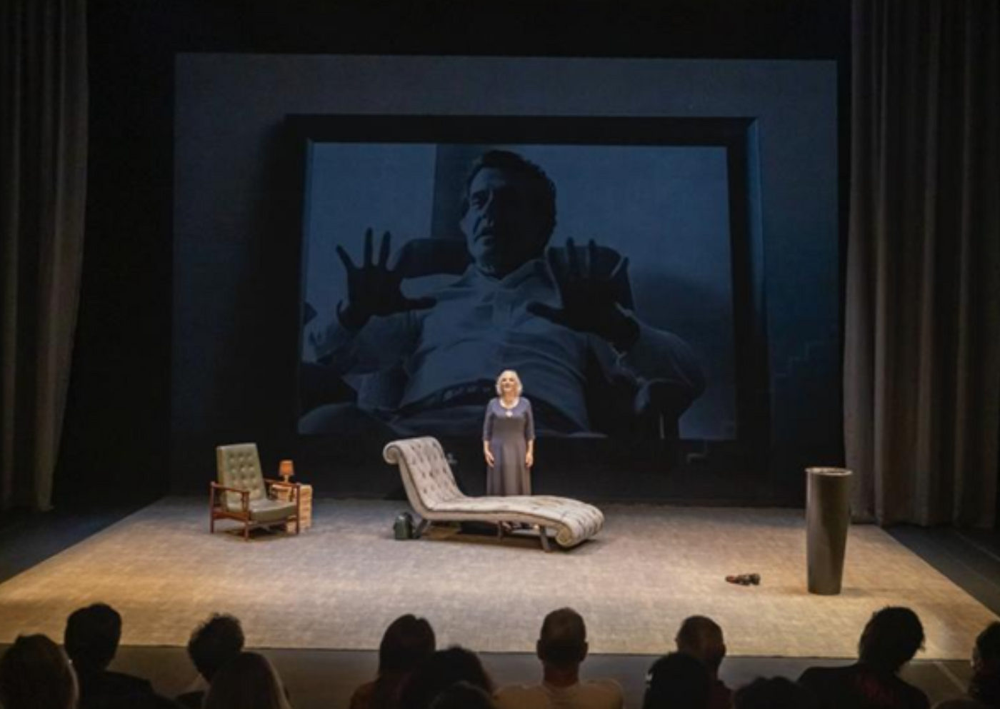

Totia Meireles estreia primeiro solo com O Lado Fatal no Teatro BDO-Jaraguá

Adaptação do livro autobiográfico de Lya Luft, dirigida por Darson Ribeiro, marca a abertura da temporada de produções próprias do teatro
A premiada atriz Totia Meireles retorna aos palcos de São Paulo em um momento especial de sua carreira: seu primeiro espetáculo solo. Ela protagoniza O Lado Fatal, adaptação teatral do livro homônimo de Lya Luft, sob direção, adaptação e cenografia de Darson Ribeiro. A estreia acontece no Teatro BDO-Jaraguá, no dia 11 de setembro de 2025, abrindo oficialmente a temporada de produções próprias do espaço.
O projeto tem uma particularidade rara: a adaptação foi chancelada pela própria Lya Luft, que, pouco antes de falecer em 2021, autorizou Ribeiro a levar ao palco o único livro autobiográfico de sua carreira.
A obra e sua trajetória
Publicado em 1988, O Lado Fatal causou grande repercussão ao expor, em forma de poemas, a relação intensa e conturbada da escritora com o psicanalista Hélio Pellegrino (1924–1988). Considerado um dos maiores nomes da psicanálise no Brasil, Pellegrino foi também poeta, cronista e um dos mais influentes intelectuais de sua geração.
O livro foi retirado de circulação a pedido da própria autora, que, anos depois, reviu sua decisão e devolveu o texto ao público. Só então o projeto teatral pôde avançar. Ribeiro transformou os 44 poemas originais em 16 cenas, acrescentando trechos de outras obras de Luft, criando uma dramaturgia que mescla lirismo, dor e memória.
Totia Meireles em seu primeiro solo
Conhecida por uma carreira sólida no teatro, no cinema e na televisão, Totia Meireles encara aqui o desafio de sustentar sozinha a narrativa no palco. Na montagem, ela dá corpo e voz à própria Lya Luft em um mergulho íntimo no luto e na experiência devastadora de perder um grande amor.
“É uma história de amor, mas também de perda irreparável. Falar sobre isso hoje é necessário, em um momento em que as relações humanas parecem cada vez mais atravessadas pelo individualismo e pela falta de afeto”, destaca Ribeiro.
Encenação e elementos cênicos
O espetáculo é ambientado em um consultório de psicanálise, cenário simbólico que homenageia Pellegrino. O espaço conta com um divã Chesterfield criado especialmente para a montagem, além de uma réplica da icônica cadeira “Gelli” utilizada por décadas pelo psicanalista. Projeções em videomapping, sobre um filó importado, invadem a cena e criam atmosferas que transitam entre o real, o imaginário e o simbólico.
O figurino, assinado por João Pimenta, traz um vestido único que, dependendo da iluminação e do ângulo, revela diferentes camadas, refletindo os aspectos psicanalíticos e emocionais da personagem.
A trilha sonora aposta no contraste: London Grammar, com a etérea Interlude, divide espaço com a intensidade rock de Patti Smith, em Because the Night. A voz em off do ator José Rubens Chachá completa a encenação, interpretando Pellegrino em diálogos que ecoam lembranças, cartas e reflexões.
Um reencontro com Lya Luft
Para Ribeiro, montar O Lado Fatal é mais do que uma homenagem: é dar continuidade ao gesto de coragem de Lya Luft, que não hesitou em registrar literariamente um amor fora dos padrões.
“Quando conheci Lya, já tinha lido apenas Perdas e Ganhos. Depois, mergulhei em sua obra e encontrei em O Lado Fatal uma vida cheia de verdade e esperança. O fato de ela romper tradições e viver um amor avassalador com Hélio Pellegrino foi o que me motivou a transformar esse livro em espetáculo”, afirma o diretor.
Serviço
Espetáculo: O Lado Fatal
Gênero: Tragicomédia
Estreia: 11 de setembro de 2025 (quinta-feira), às 20h
Temporada: 12/09 a 05/10/2025 – sextas e sábados, às 20h | domingos, às 19h
Local: Teatro BDO-Jaraguá – Rua Martins Fontes, 71, Centro (Metrô Anhangabaú)
Telefone: (11) 2802-7075
Capacidade: 260 lugares
Duração: 55 minutos
Classificação: Livre
Ingressos: R$ 150 (inteira) | R$ 75 (meia-entrada) 🎟️ À venda a partir das 17h, às quintas-feiras, na bilheteria do teatro ou pelo link oficial.
Estacionamento: no local, pela Estapar, com valor reduzido de R$ 30 para público do espetáculo (até 4h).